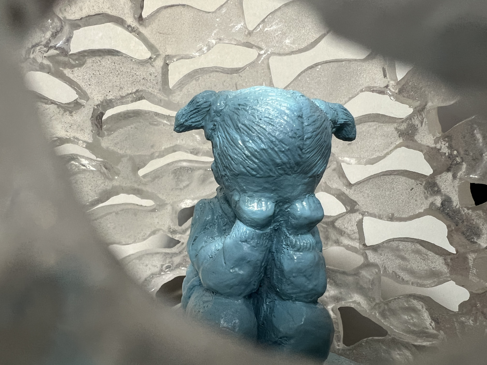

Like A Sigh Underwater
Resin, concrete
6.5” x 12” x 6.5"
2025

Like A Sigh Underwater is an egg-shaped resin sculpture, translucent at the top and deepening into weighted turquoise blue at the bottom. The outer surface is built from swarms of small cast fish, layered scale by scale into a dense, swirling mass. Inside, visible through the gaps between fish, a small blue figure stands at the center of it all. Still. Upright.
The naming of the piece is from a Spanish idiom: Como un suspiro bajo el agua -- to persevere not by overpowering what surrounds you, but by continuing to exist within it. To be moved, tilted, knocked, and to return. The blue of the water and the blue of the figure are the same color deliberately. She is not separate from the chaos. She is made of the same thing.
The piece is designed to be touched. Viewers are invited to push it, tilt it, set it rocking — and watch it find its way back to center. The roly poly mechanism is not a metaphor added after the fact. It is the work. Resilience is not a quality you can observe from a distance. It only becomes visible in the moment something is displaced and rises again.
